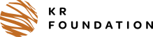

Applications / Projects
2026 · KR Foundation
GreenREFORM-EU 2.0: refining the model and writing the documentation

In 2026 the KR Foundation funded DREAM to carry on the work begun under TSI 2024. The year is used to refine the model, document it, write a user guide and support the four teams that are calibrating it to their own data.
Why it was set up
The TSI 2024 project ran for one year and ended in December 2025. Four of the five institutions that took part were then building national data sets. A break at that point risked losing the momentum, and with it the teams.
The KR Foundation funded a further year so that the work could continue without a gap. The foundation had also supported the original Danish GreenREFORM through the Green GDP project.
What it sets out to do
- Strengthen the four institutions’ capacity to analyse climate policy with the model, so that each has a model calibrated to its own data.
- Refine the model and generalise its architecture, so that it fits a broader range of countries.
- Publish a refined and well-documented version 2.0 as open source.
- Prepare the ground for further projects with other countries.
What the project does
- Model development. Refinements agreed with the four teams, the theoretical documentation, a user guide, and publication.
- Data and implementation. Individual support to each team: data structure and aggregation choices, calibration, error resolution, and reading the results.
- Capacity building. Online workshops and introductions for new staff, scheduled as the teams need them.
- Viet Nam. A small part of the effort supports the University of Copenhagen’s Viet Nam project. That project has its own funding and its own entry under Projects.
Where it stands
As of 9 October 2026.
- Documentation. Draft version 3, about 125 pages, was circulated to the teams on 8 October. Chapters 3 to 6 have been checked against the code.
- Energy technology model. In testing.
- Model structure. Modules separated from the model set-up and renamed to match the documentation.
- Energy markets. A general treatment of energy margins replaces a hard-coded one.
- User guide. Being written. It will be published after this website goes live.
- Publication. The model code is published as open source in the repository on GitHub. The documentation is a PDF on this website. The user guide follows later. The licence text is to be confirmed by DREAM.
Support to the teams continues until the project closes at the end of 2026.
Who is supported
- Austria: Federal Ministry of Finance
- Belgium: Federal Planning Bureau
- Finland: Ministry of Finance
- Italy: Department of Finance, Ministry of Economy and Finance
Country progress is reported by each institution, not here.
Results
There is no separate policy paper from this project yet. Work by the partner institutions is listed under Analyses when they publish it.
The model it refines, and the first public analysis, come from the TSI 2024 project.
Read more
- Model documentation, the project’s main output
- DREAM’s news item on the extension (in Danish)
- KR Foundation
Record
| Funder | KR Foundation, a Danish non-profit foundation working on climate and the environment |
|---|---|
| Delivered by | DREAM |
| Period | 2026. One year, in direct continuation of TSI 2024. |
| Model version | 1.0 was built under TSI 2024. 2.0 is the refined, documented edition. |
| Teams supported | Austria, Belgium, Finland and Italy |
| Planned outputs | A refined model, theoretical documentation, a user guide and this website |
| Status | In progress |